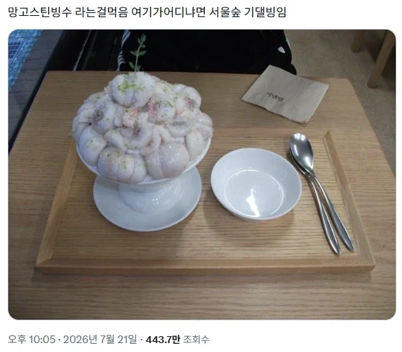
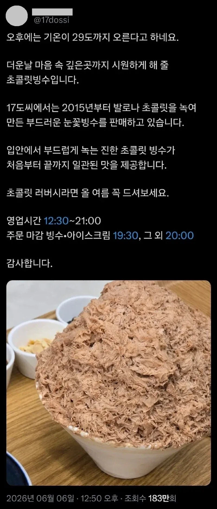

38 · 31 · 12 시간 전 · 원문


수집 당시 댓글 31개
베터콜꺄울 · 22 시간 전
↳ 답글 · 유아학교 · 15 시간 전
수강여석이없습니다 · 22 시간 전
밑에껀 초콜릿 청크 갈아서 뿌리거나 코코아가루라도 뿌려줘야겠다...
↳ 답글 · 롤리퐁 · 21 시간 전
ㄹㅇㅋㅋㅋ어딘진몰라도...그정도도생각못하나
↳ 답글 · 캐정 · 12 시간 전
난 그 가루가 너무 싫어서 설빙에서도 빼달라하는데... 저상태 저거 존나 좋아....
짱구조아 · 22 시간 전
맨 위 아무리봐도 낙지 손질해서 쌓아둔걸로 밖에 안보임 ㅋㅋㅋ
오이쉬 · 21 시간 전
저게 분자요리인가 그거지?
Robin · 21 시간 전
낙지탕탕이같네
걱정만잔뜩인찐찌버거 · 21 시간 전
산낙지 ㅋㅋㅋㅋㅋㅋㅋㅋㅋㅋㅋㅋㅋㅋ
항문자위 · 21 시간 전
참치마요지?
↳ 답글 · 오왕재 · 13 시간 전
아이비만 있으면 참치크래커 개꿀
롤리퐁 · 21 시간 전
위에껀 딸기나 망고처럼 색감진한 과일 데코하고밑에껀 초코나 초코시럽좀 뿌려주지...
꾸구가가 · 21 시간 전
아래쪽 짤 보기 전까진 글 대충 읽어서 진짜 낙지회덮밥인줄ㅋㅋㅋ
파랑1 · 20 시간 전
ㅅㅂ ㅋㅋㅋ
보추암컷타락 · 18 시간 전
참치캔 1.87KG 짜리 털었냐 ㄷㄷ
↳ 답글 · 여름노을 · 14 시간 전
참치캔 다 뒤졌다
사토준지 · 14 시간 전
주꾸미 샤브샤브 해먹으려기 준비해놓은거 아냐?
세미 · 14 시간 전
아잇 비린내
ENTP환자 · 14 시간 전
옛날에 우리 어무니가 저렇게 요리하긴 햇음
사촌간불알빨기 · 14 시간 전
마운틴 낙지 참기름장에 찍어서 먹고싶다
언니 · 14 시간 전
케치마인드장재미슴 · 14 시간 전
주꾸미 땡기네
침대와한몸 · 14 시간 전
밑에꺼 생긴 건 저래도 웨이팅 길더라
↳ 답글 · 리페어독 · 13 시간 전
ㄴㄴ 요즘 업장 옮겨서(바로 옆) 웨이팅 줄어듬
↳ 답글 · 침대와한몸 · 12 시간 전
ㄹㅇ? 가봐야겠네
↳ 답글 · 리페어독 · 10 시간 전
ㅇㅇ 이전엔 테이블 몇 개 없고 좁았는데 이제 건물 한 채 단독으로 써서 넓고 깔끔해짐 꽃도 예쁘더라.
파카사탕 · 13 시간 전
불타는케리건 · 12 시간 전
밑엔 ㄹㅇ 참치네 ㅋㅋㅋ
니엄마만수무강 · 11 시간 전
단백질 충~~~~전~~~~
지하왕국 · 2 시간 전
망고스틴은 연포탕 생각나는 비주얼이네 대가리 뒤집어까놓은...
비정상헬린이 · 1 시간 전
좀 비주얼이 영...
댓글
수집 당시 댓글 31개
베터콜꺄울 · 22 시간 전
· 유아학교 · 15 시간 전
수강여석이없습니다 · 22 시간 전
밑에껀 초콜릿 청크 갈아서 뿌리거나 코코아가루라도 뿌려줘야겠다...
· 롤리퐁 · 21 시간 전
ㄹㅇㅋㅋㅋ
어딘진몰라도...그정도도생각못하나
· 캐정 · 12 시간 전
난 그 가루가 너무 싫어서 설빙에서도 빼달라하는데... 저상태 저거 존나 좋아....
짱구조아 · 22 시간 전
맨 위 아무리봐도 낙지 손질해서 쌓아둔걸로 밖에 안보임 ㅋㅋㅋ
오이쉬 · 21 시간 전
저게 분자요리인가 그거지?
Robin · 21 시간 전
낙지탕탕이같네
걱정만잔뜩인찐찌버거 · 21 시간 전
산낙지 ㅋㅋㅋㅋㅋㅋㅋㅋㅋㅋㅋㅋㅋㅋ
항문자위 · 21 시간 전
참치마요지?
· 오왕재 · 13 시간 전
아이비만 있으면 참치크래커 개꿀
롤리퐁 · 21 시간 전
위에껀 딸기나 망고처럼 색감진한 과일 데코하고
밑에껀 초코나 초코시럽좀 뿌려주지...
꾸구가가 · 21 시간 전
아래쪽 짤 보기 전까진 글 대충 읽어서 진짜 낙지회덮밥인줄ㅋㅋㅋ
파랑1 · 20 시간 전
ㅅㅂ ㅋㅋㅋ
보추암컷타락 · 18 시간 전
참치캔 1.87KG 짜리 털었냐 ㄷㄷ
· 여름노을 · 14 시간 전
참치캔 다 뒤졌다
사토준지 · 14 시간 전
주꾸미 샤브샤브 해먹으려기 준비해놓은거 아냐?
세미 · 14 시간 전
아잇 비린내
ENTP환자 · 14 시간 전
옛날에 우리 어무니가 저렇게 요리하긴 햇음
사촌간불알빨기 · 14 시간 전
마운틴 낙지 참기름장에 찍어서 먹고싶다
언니 · 14 시간 전
케치마인드장재미슴 · 14 시간 전
주꾸미 땡기네
침대와한몸 · 14 시간 전
밑에꺼 생긴 건 저래도 웨이팅 길더라
· 리페어독 · 13 시간 전
ㄴㄴ 요즘 업장 옮겨서(바로 옆) 웨이팅 줄어듬
· 침대와한몸 · 12 시간 전
ㄹㅇ? 가봐야겠네
· 리페어독 · 10 시간 전
ㅇㅇ 이전엔 테이블 몇 개 없고 좁았는데 이제 건물 한 채 단독으로 써서 넓고 깔끔해짐 꽃도 예쁘더라.
파카사탕 · 13 시간 전
불타는케리건 · 12 시간 전
밑엔 ㄹㅇ 참치네 ㅋㅋㅋ
니엄마만수무강 · 11 시간 전
단백질 충~~~~전~~~~
지하왕국 · 2 시간 전
망고스틴은 연포탕 생각나는 비주얼이네 대가리 뒤집어까놓은...
비정상헬린이 · 1 시간 전
좀 비주얼이 영...